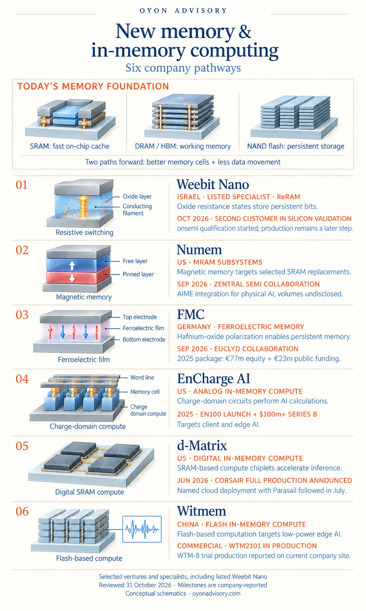

Back to Research & Perspectives
New Memory & In-Memory Computing: Six Company Pathways
AI computing depends on how efficiently systems store and move data. Faster processors need memory that can supply information quickly, within practical power and cost limits.
Two complementary directions are emerging: improving the memory device itself and performing calculations inside memory to reduce data movement.
The current technology landscape
Today’s systems combine several memory technologies:
- SRAM provides fast on-chip caches and buffers, but consumes substantial chip area.
- DRAM, including stacked HBM, supplies larger working memory. It requires periodic refresh and loses data without power.
- NAND flash provides dense, persistent storage, primarily in SSDs.
Emerging memories use different physical mechanisms. ReRAM stores information through resistance changes; MRAM uses magnetic orientation; and ferroelectric memory uses electric polarization.
Compute-in-memory (CIM) changes where calculations happen. It can use emerging devices or established technologies such as SRAM and flash. Analog approaches exploit electrical quantities to perform calculations; digital approaches integrate computation into memory structures.
The following six companies illustrate commercially active pathways across this landscape. They include venture-backed businesses, growth-stage companies and listed specialist Weebit Nano.


Six company pathways
1. Weebit Nano | Israel — Embedded ReRAM
Weebit develops oxide-based ReRAM IP for integration into semiconductor chips, offering persistent memory as an alternative to embedded flash.
In October 2026, it reported that a second customer had begun silicon validation and that onsemi had started qualification. It also signed two AI-related CIM exploration agreements. These represent distinct stages: embedded-memory commercialization is progressing, while its CIM applications remain under development. [1]
2. Numem | US — MRAM subsystems
Numem combines magnetic memory with control and subsystem IP to target selected SRAM replacements, seeking higher density, persistence and lower standby power.
In September 2026, it announced a collaboration with Zentral Semi to integrate its AI Memory Engine, or AIME, into a physical-AI architecture. The announcement provides a named integration signal; shipment volumes were not disclosed. [2]
3. FMC | Germany — Hafnium-oxide ferroelectric memory
FMC develops ferroelectric memory for its DRAM+ and Cache+ platforms, targeting fast, persistent memory for AI systems.
Its November 2025 financing package totalled €100 million, comprising €77 million in equity and €23 million in public funding. In September 2026, FMC announced a collaboration with EUCLYD on AI infrastructure combining its memory with EUCLYD’s compute architecture. Deployment milestones remain to be announced. [3][4]
4. EnCharge AI | US — Charge-domain analog computing
EnCharge uses precise metal capacitors to perform analog calculations within its computing fabric, reducing the need to move data between separate memory and processing units. [5]
It raised more than $100 million in Series B funding in February 2025, led by Tiger Global, and announced its EN100 accelerator in May 2025 for on-device AI. Its approach illustrates how analog CIM can develop around conventional semiconductor components. [6][7]
5. d-Matrix | US — Digital SRAM-based computing
d-Matrix develops SRAM-based digital in-memory compute chiplets for AI inference, supported by networking and software.
In June 2026, it announced that Corsair had entered full production, manufactured using TSMC’s N6 process. A Parasail deployment announcement followed in July, providing a named commercial application alongside conventional GPUs. [8][9]
6. Witmem | China — Flash-based edge-AI computing
Witmem develops flash-based CIM chips for low-power applications such as speech processing, wearables and vision. [10]
Its WTM2101 is a commercial product, with a disclosed application in VIMOTO motorcycle headsets. The company’s current Chinese-language site also reports trial production of its WTM-8 vision-chip series. This provides an example of CIM reaching specific edge applications before broader deployment. [11][12][13]
The opportunity
Different applications need different memory improvements: persistence in embedded systems, lower standby power, faster inference or reduced data movement.
Commercial value depends on reliable manufacturing, useful system-level performance and customer adoption. For CIM, the decisive comparison includes accuracy, software, conversion and control overhead—not simply the efficiency of an isolated memory array.
Selected public sources
- Weebit Nano — Customer silicon validation and qualification update; October 16, 2026
- Numem — Zentral Semi physical-AI collaboration; September 18, 2026
- DTCF — FMC financing composition; November 13, 2025
- FMC — EUCLYD strategic collaboration; September 15, 2026
- EnCharge AI — Charge-domain in-memory computing technology
- EnCharge AI — Series B financing; February 13, 2025
- EnCharge AI — EN100 announcement; May 29, 2025
- d-Matrix — Corsair full-production announcement; June 9, 2026
- d-Matrix — Parasail deployment announcement; July 7, 2026
- Witmem — Flash-based computing; company exhibitor profile, IIC Shanghai 2022
- Witmem — VIMOTO WTM2101 application; September 13, 2024
- Witmem — WTM2101 production and WTM-8 trial-production status; undated current company page
- Witmem — WTM2101 product and development board